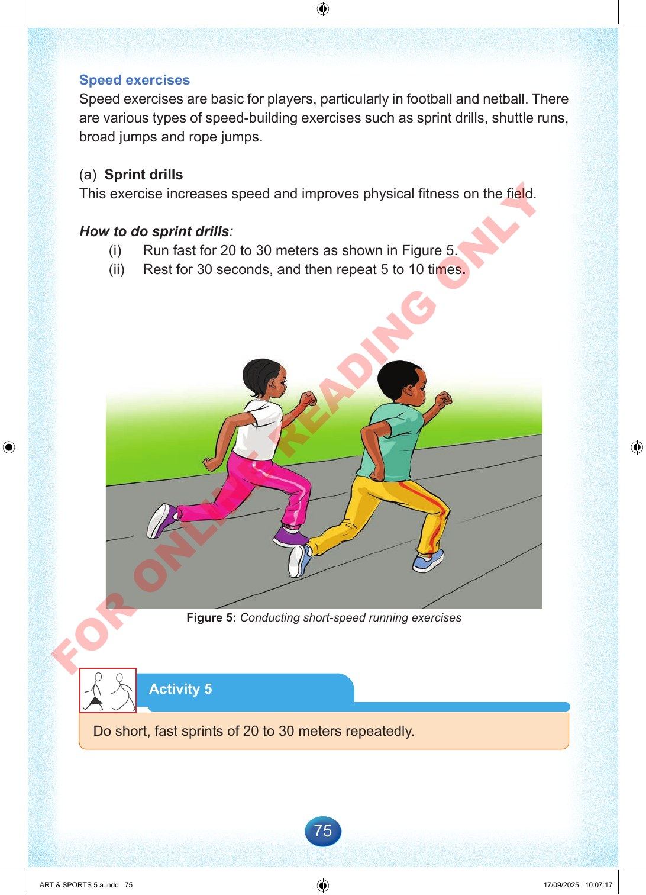

75
Speed
exercises
Speed
exercises
are
basic
for
players,
particularly
in
football
and
netball.
There
are
various
types
of
speed-building
exercises
such
as
sprint
drills,
shuttle
runs,
broad
jumps
and
rope
jumps.
(a)
Sprint
drills
This
exercise
increases
speed
and
improves
physical
fitness
on
the
field.
How
to
do
sprint
drills:
(i)
Run
fast
for
20
to
30
meters
as
shown
in
Figure
5.
(ii)
Rest
for
30
seconds,
and
then
repeat
5
to
10
times.
Figure
5:
Conducting
short-speed
running
exercises
Activity
5
Do
short,
fast
sprints
of
20
to
30
meters
repeatedly.
ART
&
SPORTS
5
a.indd
75
ART
&
SPORTS
5
a.indd
75
17/09/2025
10:07:17
17/09/2025
10:07:17
F
O
R
O
N
L
I
N
E
R
E
A
D
I
N
G
O
N
L
Y